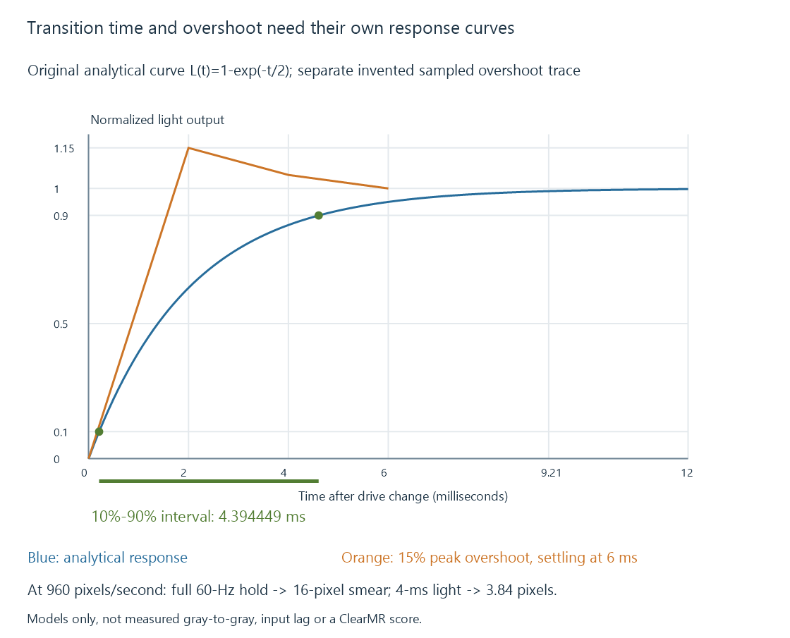

Display response time and motion blur
Display response time measures a defined transition in pixel output, while motion clarity also depends on picture timing, illumination persistence and processing.
When a display is driven to a new pixel level, its output does not necessarily reach that level instantly. Response time measures a specified part of that transition.
The measurement needs a starting level, destination level and threshold definition. A quoted number without those conditions gives only a partial description of motion.
Transition, delay and persistence are different times
| Quantity | What it describes |
|---|---|
| Processing/input delay | Time before a new picture begins affecting the output |
| Pixel transition time | Time spent changing between specified light levels |
| Illuminated persistence | How long the picture’s light remains visible within its presentation |
| Source-picture interval | Time between samples created by the content |
A “one-ms response” does not establish one-ms input-to-light delay. A display can buffer a picture before driving a fast pixel.
A fast transition also does not imply that the picture is illuminated only briefly.
A curve needs a defined measurement interval
Consider an original normalized transition from zero toward one:
L(t) = 1 − exp(−t / 2), with t in milliseconds
The two-millisecond parameter is a time constant, not a measured gray-to-gray result.
The model reaches 10% at approximately 0.210721 ms and 90% at 4.605170 ms. Its 10%-to-90% interval is:
t90 − t10 = 2 × ln(9) = 4.394449 ms
It reaches 99% at 9.210340 ms, so reaching 90% is not the same event as completing the entire asymptotic transition.

The equation is a teaching model. Real response depends on the display technology, source/destination levels, drive policy and temperature, and need not have this shape.
A fast initial crossing can hide overshoot
An implementation can drive a transition aggressively so it reaches the target earlier. If its light output then exceeds the intended level before settling, the moving object can acquire a bright or dark inverse trail.
Use a separate original sampled trace:
| Model time | Normalized output |
|---|---|
| 0 ms | 0 |
| 2 ms | 1.15 |
| 4 ms | 1.05 |
| 6 ms | 1 |
The early crossing of one does not mean all later samples are correct. The maximum overshoot is 15% relative to this unit target.
VESA’s ClearMR material treats motion blur and overshoot/undershoot as relevant visual behavior. A transition-time figure alone cannot describe those artifacts completely.
The trace above is not an overdrive setting or a measurement of a panel.
Eye tracking exposes another blur mechanism
Suppose an ideal pixel changes instantly, then holds a picture’s light for the whole 16.667-ms interval of an exact sixty-Hz output.
As the eye tracks an object moving at an original declared 960 screen pixels per second, the object’s held position moves across the retina during that interval. A simple uniform-hold estimate is:
960 × (1 / 60) = 16 pixels of tracking smear
If illumination lasts only four milliseconds under otherwise ideal conditions:
960 × 0.004 = 3.84 pixels
This model excludes the camera’s blur, pixel transition shape, eye dynamics and multiple image pulses. It explains persistence as a separate contribution, not a complete prediction of perceived blur or a ClearMR score.
Black-frame insertion develops how the illuminated interval can be shortened.
Movies include their own motion sampling
A 24-fps movie can have substantial camera-exposure blur and only twenty-four distinct source samples per second. A fast display cannot reconstruct motion information that was never supplied.
Judder concerns another relationship: unequal presentation durations can add a repeated rhythm to those samples.
For Emby playback, compare the same scene while identifying source cadence, output mode and display processing. A panel response difference, an interpolation change and an uneven repeat schedule can all alter movement, but through different mechanisms.
See Also
- OLED displays
- LCD and LED-backlit displays
- Judder and uneven picture cadence
- Black-frame insertion and display persistence